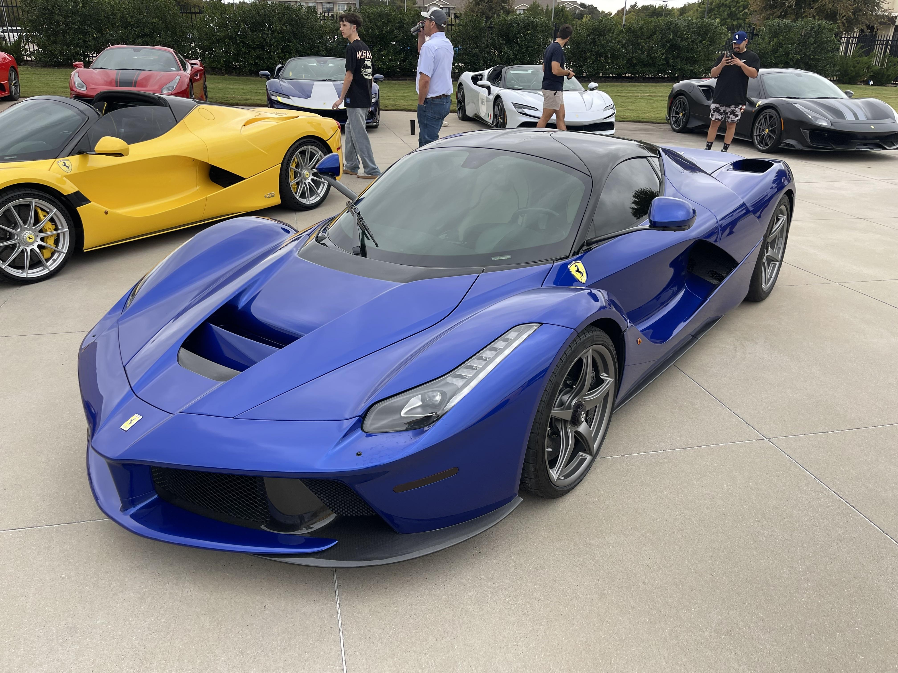
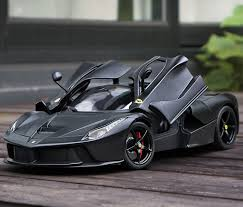

A Ferrari azul é um modelo exclusivo e sofisticado que representa a elegância e o refinamento da marca italiana. Com seu design aerodinâmico e cores vibrantes, este modelo chamou a atenção dos colecionadores de todo o mundo.
Equipado com um motor de alta performance, a Ferrari azul oferece uma experiência de condução incomparável, combinando velocidade, conforto e inovação tecnológica em um único veículo.

A Ferrari vermelha é o símbolo icônico da marca, conhecida mundialmente pela sua cor característica e desempenho excepcional. Este modelo é desde há décadas o primeiro veículo que vem à mente quando se pensa em Ferraris.
Com uma longa história de vitórias em competições de Fórmula 1, a Ferrari vermelha representa a tradição, paixão e compromisso da marca com a excelência automóvel.
A Ferrari preta é um modelo moderno e sofisticado que combina elegância com desempenho extremo. Sua cor discreta contrasta perfeitamente com o design ousado e as linhas aerodinâmicas características da marca.
Este modelo oferece toda a tecnologia de ponta e potência que Ferrari é conhecida, mantendo uma aparência misteriosa e luxuosa que atrai clientes que procuram exclusividade e discrição.
